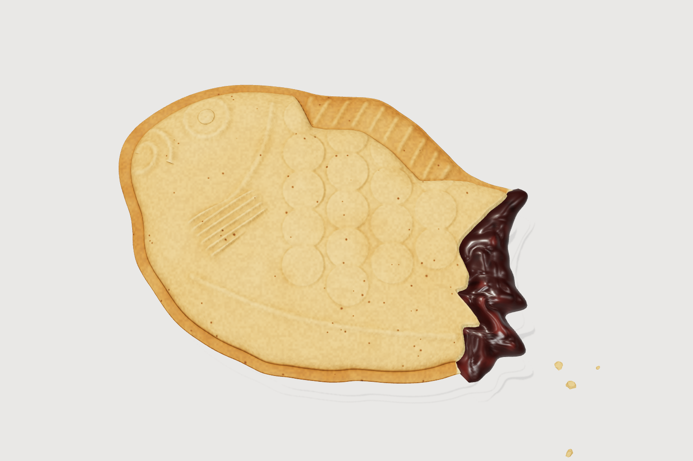
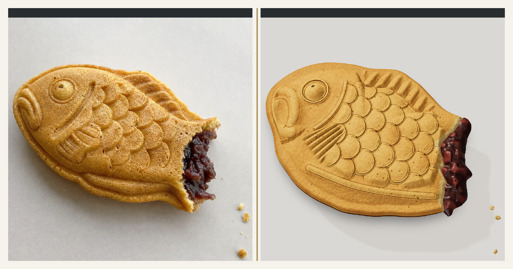

img2threejs는 클로드 코드·코덱스 같은 코딩 AI에 붙여 쓰는 무료 오픈소스 스킬(Apache-2.0)이에요. 물건 사진 한 장을 주면, AI가 그 물건을 3D 파일(.glb 같은 것) 없이 three.js 코드로만 다시 지어요. three.js는 웹 브라우저에서 3D를 그리는 도구라, 결과는 웹페이지에서 바로 돌려 볼 수 있어요. 단계마다 직접 렌더해서 사진과 나란히 비교하고, 다른 곳은 스스로 고쳐요. 부품(눈·지느러미·속 재료…)마다 따로 지어서 떼어 보거나 움직일 수 있어요. 아래 '처음부터 끝까지 예시'는 저희가 윈도우 PC에서 클로드 코드로 직접 돌려 본 결과예요. 맥·리눅스 한 줄 설치와 코덱스 사용은 공식 설치 문서 기준이에요.
터미널에서 '복사해서 쓰기'의 설치 명령을 실행해요. PC에 있는 코딩 AI(~/.claude, ~/.codex 등 폴더가 있는 것)를 찾아 스킬을 연결해 줘요. 이어서 확인 명령(doctor)을 돌려 'managed'가 보이면 설치된 거예요. 그다음 AI를 껐다 켜요.
공식 설치 명령은 아직 윈도우를 지원하지 않아요(공식 문서). 그래서 공식 문서의 '손으로 설치'대로 했어요: 저장소를 내려받아 클로드 스킬 폴더(내 사용자 폴더\.claude\skills\img2threejs)에 통째로 넣기. 저희는 폴더를 복사했어요. 그리고 스킬이 python3 라는 명령을 부르는데, 윈도우에선 python3가 스토어 바로가기로 잡혀 안 돌 수 있어요 — 저희는 python3라는 이름의 작은 연결 파일을 만들어 설치된 파이썬으로 이어 줬어요. Git Bash에서 '복사해서 쓰기'의 python3 연결 한 줄이 같은 일을 해요(~/bin 폴더가 Git Bash 경로에 들어 있을 때).
작업 폴더에 사진을 넣고(예: reference.png) 클로드 코드를 켠 뒤 '복사해서 쓰기'의 첫 요청을 그대로 붙여 넣어요. 클로드 코드에선 앞에 /img2threejs 를 붙여야 스킬을 확실히 써요. 코덱스는 '설치한 img2threejs 스킬로 ./reference.png 를 다시 지어 줘'처럼 적어요(공식 문서).
사진 검사 → 물건 종류·난이도 판단 → 부품·재질 계획(어떤 부품이 몇 개, 무슨 색) → three.js 코드 작성 → 렌더 → 사진과 나란히 놓은 비교 그림 한 장을 보고 통과/다시 → 다음 단계. 단계는 모양 → 구조 → 형태 → 재질 → 표면 → 조명 → 움직임 → 최적화 8개예요. 검사가 떨어지면 다음 단계로 안 넘어가요.
결과는 TypeScript 코드 파일(src/create○○Model.ts)과 설계 파일(spec.json), 단계별 렌더·비교 그림이에요. AI가 만든 미리보기 페이지(preview)를 로컬 서버로 열면 브라우저에서 돌려 볼 수 있어요. 모델 안에는 부품마다 회전축·연결점이 들어 있어서 떼어 보거나(분해) 움직이게 만들 수 있어요.
같은 대화에서 다른 곳을 콕 집어 말해요. 예: '비늘은 겹친 반달 줄로, 눈은 또렷하게'. 공식 README의 '더 세게 시키기' 틀처럼 모양·재질·움직임·검사 기준을 줄마다 적으면 그 기준대로 검사해요. 대화가 끊겼으면 같은 폴더에서 다시 켜고 '중간에 끊겼어, .img2threejs/state.json 에서 이어서 해 줘'라고 하면 기록된 단계부터 이어 가요.
쓰기 좋은 때: 웹페이지·게임에 넣을 소품(그릇·도구·간식·장난감)을 사진 한 장으로 잡을 때, 3D 파일 없이 코드로 들고 다니고 싶을 때, 부품을 움직이거나 터지게 만들 3D가 필요할 때. 안 맞는 때: 빨리 끝내야 할 때(몇 시간 걸릴 수 있어요), 사람 얼굴을 똑같이 만들어야 할 때(캐릭터는 비슷하게만), 뒷면 모양이 중요한데 사진이 한 장뿐일 때, AI 사용량을 아껴야 할 때.
11/6 저희 윈도우 PC(그래픽 카드 없음)에서 클로드 코드로 돌렸어요. 넣은 사진은 시연용으로 만든 '꼬리 먹힌 붕어빵' 한 장이에요. 첫 요청은 공식 문장 그대로 한 번 → 클로드가 사진에서 윤곽을 따고, 부품 12개(몸통·테두리·팥·부스러기·눈·입·아가미·지느러미·비늘…)로 나누고, 사진 칸마다 색을 뽑아 코드를 썼어요 → 첫 렌더가 가로세로 비율 검사에서 떨어지자 스스로 고쳐 통과 → 비늘 표면의 주름도 스스로 매끈하게. 여기까지 91분(8단계 중 첫 단계의 검사까지 — 저희가 여기서 멈춤). 비늘·눈이 흐려서 고쳐 달라고 한 번 더 시켰어요('비늘은 사진처럼 겹친 반달 줄로, 눈은 또렷한 동그라미와 눈동자로, 지느러미 줄무늬는 평행한 홈으로 바꿔 줘. 사진이랑 나란히 비교하면서 맞을 때까지 고쳐 줘.') → 69분 뒤 반달 비늘·눈·지느러미·놀란 입이 사진처럼 또렷해졌어요(사진과 겹치는 정도 0.895 → 0.936). 사진에 없는 아랫면은 윗면 무늬를 70% 세기로 뒤집어 채웠다고 스스로 밝혔어요.


터미널에서
npx --yes img2threejs@latest install
터미널에서
npx --yes img2threejs@latest doctor
Git Bash에서
git clone https://github.com/img2threejs/img2threejs.git ~/.claude/skills/img2threejs
Git Bash에서(한 번만)
mkdir -p ~/bin && printf '#!/bin/sh\nexec python "$@"\n' > ~/bin/python3 && chmod +x ~/bin/python3
클로드 코드에
/img2threejs Rebuild the object in ./reference.png as a procedural Three.js model. Keep its proportions, silhouette and colours. Follow the quality gates. Report the output files, render-review evidence and any inferred regions.
같은 대화에
비늘은 사진처럼 겹친 반달 줄로, 눈은 또렷한 동그라미와 눈동자로, 지느러미 줄무늬는 평행한 홈으로 바꿔 줘. 사진이랑 나란히 비교하면서 맞을 때까지 고쳐 줘.
같은 폴더에서 다시 켜고
중간에 끊겼어. .img2threejs/state.json 에서 이어서 해 줘.
도움이 되셨다면
@ai.antenna.kr
에서 바로 쓰는 AI 활용법을 계속 올립니다.